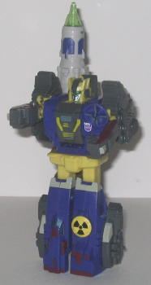

Allegiance : Decepticon
Size : Basic
Difficulty of Transformation : Easy
Color Scheme : Gray, flat maroon, dull greenish yellow, and some chalky purple, transparent yellow, silver, and glossy purplish black
Rating : 8.9
Price : $20 (U.S.)
(Like all Universe toys, these two are redecos
of earlier TFs; however, since I don't have the original molds, I'll be
reviewing these toys completely.)
 Space
Case
Space
Case
Allegiance
: Decepticon
Size
: Basic
Difficulty of Transformation
: Easy
Color Scheme
: Gray, flat maroon,
dull greenish yellow, and some chalky purple, transparent yellow, silver,
and glossy purplish black
Rating
: 8.9
Space Case is a redeco
of the Generation 2 toy of the same name, part of the Cyberjets subline.
As with all the Cyberjets, Space Case has a very nice vehicle mode; the
robot legs stick out a tad from the bottom, but it's not much at all, and
hardly interrupts the streamlined look of the rest of the mode. And the
top of the plane looks great; there's plenty of nifty purple and yellow
paint details, including a silver "worn metal" pattern on the front of
the wings, which is especially cool. The mold detailing isn't all that
spectacular-- just some streamed lines here and there, no real mechanical
detail-- though it is at least of an acceptable level. The color scheme
is also pretty nice-- gray, purple, and maroon go well together, and the
silver and dull yellow serve as nice accent colors. Space Case also has
three retractable miniature landing gear, though at this scale, the wheels
don't roll, they're just molded with the rest of the landing gear. Probably
my only big problem with this mode is that the missiles don't really fit
in their little alcoves on the underside of the wings very well; they almost
always slooowly fall off. So that's rather annoying.
Space Case's robot mode
is also pretty darn good overall. His proportions can't be beat, and his
articulation is incredibly good considering the mold's age; he can move
at the head, shoulders, elbows, hips, and knees, and all of them are on
ball joints. The joints are of reasonable tightness now, but over time,
I can see them becoming looser. Still, you can get a ton of cool poses
out of this guy. As you can probably tell he has a push-missile launcher
on the underside of his right arm, but this is pretty much his only real
gimmick; back in the day, his main drawing point WAS his articulation.
He has to resort to holding his other missile in his hand as a kind of
beat-down stick. I like all of the paint detailing he has in this mode,
too, as it livens up the toy quite a bit. Space Case's head also looks
pretty cool-- he's got kind of a triangular optic thing going, which is
very unique. It also gives the face quite an emotionless quality-- a good
trait for some Decepticons, I think. Again, though, a few noticeable complaints.
His shoulder panels don't really lock into anything, but just kind of hang
out the sides of his chest. So they can tend to wobble slightly without
anything to hold onto. It also leaves a rather noticable gap inbetween
his head and arms. Another downside is that the tabs that are supposed
to hold his waist to his backside don't really hold them together all that
well. So his body can get unhooked from his backside a little easier than
I'd like.
 Soundwave
Soundwave

Allegiance
: Decepticon
Size
: Mega
Difficulty of Transformation
: Easy
Color Scheme
: Greyish white, royal
purple, gray, dull yellow, and some light glossy gray, yellow, black, transparent
bluish green, glossy maroon, and metallic teal
Rating
: 6.5
Universe Soundwave bares
very little resemblance to
G1 Soundwave
.
I guess the name is just re-used from this mold's previous Machine Wars
version, also named Soundwave. Universe Soundwave isn't a tape player,
but a mobile missile launcher; and his color scheme bares no resemblance
to his G1 version, either. It's quite a good scheme by itself, though--
purple and gray go very well together, and the greyish white used for the
missile helps give at least one lighter color to the overall scheme in
this mode. Soundwave's also got lots of little paint details all over the
place- it really helps to liven this toy up. Some of the details I especially
like, such as the paint detailing given to even the tiny windows on Soundwave's
form, and the "nuclear" sign painted on a small yellow circle on his topside
as well. There are also no robot extras to speak of whatsoever-- another
plus. Soundwave's gimmick is also rather imaginative. If you look in the
small scope on the back end of the missile, you'll just see green-- but
if you flip up the transparent green switch on the right side of the missile,
a targeting reticle with an Autobot symbol in the middle of it will slide
up into the scope's vision! It's rather cool. (I can't figure out what
the other maroon switch does, though-- it opens up a small window on the
top side of the missile, but it doesn't do anything to the scope's sight...)
The only real downside to this mode--and it's a rather annoying one-- is
that the peg that holds the missile onto the main body of the carrier isn't
all that right. So the missile tends to swirl back and forth even if you
move Soundwave around a little.
Soundwave's robot mode
is starting to show its age, however. The proportions are a tad off-- the
hands are far too small, the lower legs too long when compared to the upper
legs-- and the articulation is pretty bad. He can move at the waist, shoulders,
elbows, and knees, but most of this movement is pretty restricted-- his
elbows can only move inwards towards his chest, his shoulders have an odd
way of moving back and forth that requires you to move both the upper and
lower arm pieces at the same time, and the knees can only move the lower
feet backwards, and like many pre-balljoint figs, the knee joints get really
floppy if the robot isn't in the "standing erect" position. A bit more
yellow shows in the overall color scheme in this mode, but given that it
isn't THE dominant color, it works well. The missile hanging off Soundwave's
backside does look rather cumbersome, since he can't really do anything
with it, but at least the peg hole for it isn't floppy in this mode. His
actual weapon is rather weak- it's basically just his satellite dish from
his vehicle mode. Yeah, you... illegally broadcast stuff, you... evil Decepticon,
you... The mold detailing, both in this mode and the other one, is surprisingly
good for a toy this old, with lots of little mechanical details, gears,
and panels. His head is pretty much the only thing on this figure that
resembles G1 Soundwave's-- it shares the same basic "faceplate with two
side antennae" design, though many other Transformers besides Soundwave
share this design, too.
Soundwave & Space Case is a tossup 2-pack, basically because the two figures are so different. Space Case is an articulate, well-proportioned, small little figure, while Soundwave is a big blocky bricky brute. If you don't mind older molds, I'd mildly recommend it, since Soundwave certainly isn't the worst old mold out there. But if articulation and proportions matter to you, I'd only have to recommend Space Case out of the two, and since it's not possible to only buy one and Space Case is by far the smaller of the two figs, I'd pass on this set if I were you.
No Stats
Review by Beastbot